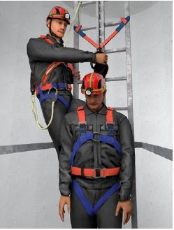

Hilflose Personen müssen möglichst schnell aus der freihängenden Position befreit werden. Es liegt in der Verantwortung des Unternehmers oder der Unternehmerin, die schnelle Rettung einer im Auffanggurt hängenden Person zu gewährleisten.
Hierbei ist zu berücksichtigen, dass der öffentliche Rettungsdienst meist nicht über Einrichtungen und Personal für die Höhenrettung verfügt. Für eine schnelle Rettung muss deshalb der Unternehmer oder die Unternehmerin in der Regel selbst Einrichtungen und Sachmittel sowie fachkundiges Personal zum Retten hängender/aufgefangener Personen bereitstellen (§ 24 Abs. 1 DGUV Vorschrift 1 "Grundsätze der Prävention").
Einzelheiten zu möglichen Rettungsmaßnahmen bzw. deren Planung enthält die DGUV Regel 112-199 "Retten aus Höhen und Tiefen mit persönlichen Absturzschutzausrüstungen".

Abb. 7 Rettung einer verunfallten Person von einer Steigschutzeinrichtung